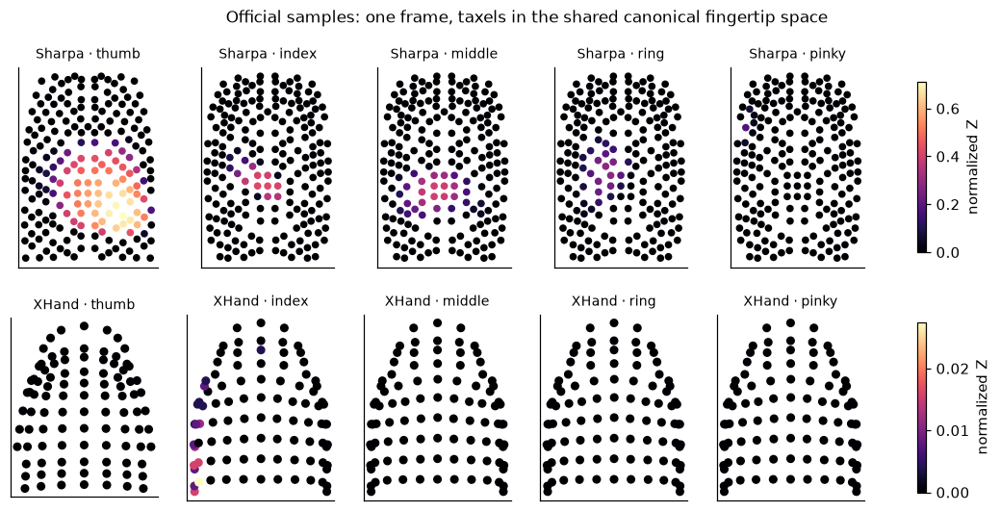
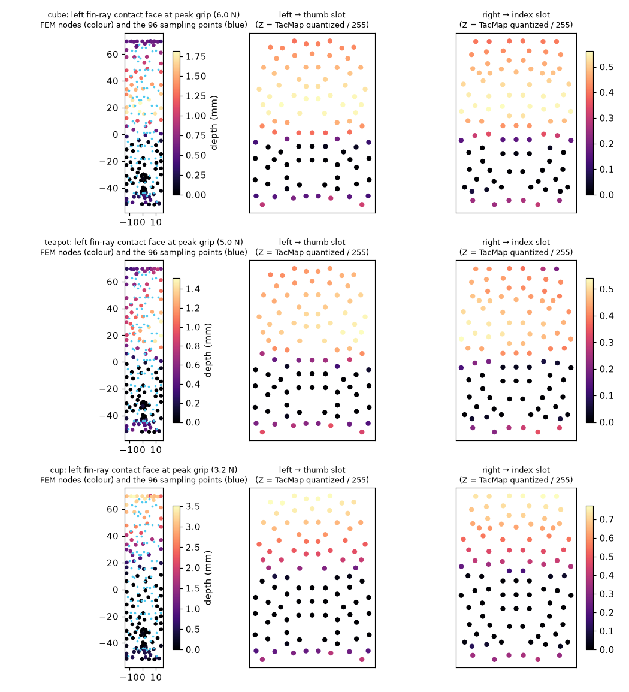

复现 LingBot-Touch：开源权重、接入 mortar 仿真器、仿真强化学习
现状（11-18 晚）：开源权重核对、mortar 两种手和 Sharpa 仿真触觉上的 probe 已经做完；论文表 3 的强化学习对比 15 次训练全部完成；按论文方法从零重新预训练已完成，用它重复 probe 和强化学习的结果都接近官方权重。 另外按要求自建了一个 PhysX 里的拧瓶盖任务，用冻结的官方编码器训练 3000 万步后 99.7 % 的回合能拧满 2 圈，是五种输入里最好的一次（每种只有一个种子，差距不大；不给触觉的策略也能拧到 96.8 %）；更接近论文的多物体版本（九种形状 × 三种尺度）也在验证。画面见下面的效果视频：转圆柱的策略（Isaac Sim 的 PhysX 引擎）和 mortar 上两指夹爪、五指手的抓取回放；编码器怎么接进强化学习见结构示意图；逐条结论见总表。一句话版本：权重可以直接用，接到同事的 mortar 仿真器上不用改仿真器，特征里确实带着接触信息（远好于同结构的随机权重）；但在 probe 任务上它并不比直接用原始信号训练的小网络好，训练充分后只是持平。它值不值得用，要看强化学习里的对比：冻结的 LingBot 编码器三个种子的成功率是 80.3 / 87.1 / 86.4 %，稳定，明显好于无触觉（平均 46 %）和原始信号（52 %），但和与策略一起训练的 CNN（85.5 %）打平，没有复现论文“好于 CNN”的结论。我们的任务只有一个圆柱，比论文简单，这个结论还要看多物体版本。
效果视频
目前有两类画面，用的物理引擎不同：转圆柱的策略是在 Isaac Sim 自带的 PhysX 上训练和回放的（论文表 3 就是这样做的，而且需要 4096 个环境并行）；mortar 上的两段是抓取回放，按脚本或人工示教执行，不是学出来的策略，用来给触觉编码器提供软指尖的形变数据。
Isaac Sim（PhysX）：强化学习训练出的策略转圆柱
mortar：两指夹爪和五指手的抓取
PhysX：自建的拧瓶盖任务
目前的结论（逐条对照论文）
| 论文的说法 | 对应实验 | 我们测到的 | 判断 |
|---|---|---|---|
| 发布的权重和推理代码可以直接用 | E0 | 权重校验和官方记录一致，120 个官方样例全部正常推理 | 复现 |
| 冻结编码器的特征里带着接触信息（附录 C.1 的仿真 probe：接触图 Dice 0.708、面积 MAE 1.089 个百分点、未来力变化 MAE 0.459 N） | E2 | 在我们重建的 Sharpa 仿真触觉上：Dice 0.91、0.76 个百分点、0.35 N，远好于同结构的随机权重（0.57、4.4、0.45）。数据不是同一份，只能比量级 | 量级复现 |
| 预训练出来的表示比不预训练好 | E1、E1b、E2 | 分三种“不预训练”来看。和同一个网络但权重随机（不训练）相比：成立，三个数据集上都好很多，说明预训练确实把接触信息装进了权重。和同一个网络在这批标注数据上从零训练相比：只在数据最少的五指手上明显更好（从零训练在那里不稳定），两指夹爪和 Sharpa 仿真触觉上大致持平。和“不用编码器、三层 MLP 直接读原始信号”相比：不成立，读出头训练充分后两者持平或原始信号略好，只有五指手上标注极少（2–5 段）时冻结编码器略好 | 部分成立 |
| 强化学习里用它成功率最高也最稳（表 3 的 In-Hand Rotation：LingBot 56.4 ± 7.5，原始信号 33.4，CNN 26.6，二值接触 18.3，无触觉 11.5） | E3 | 同一个任务、五种输入各 3 个种子，全部完成。满重力成功率（平均 ± 标准差）：无触觉 46.2 ± 32.5，二值接触 77.6 ± 7.2，原始信号 51.7 ± 40.8，CNN 85.5 ± 3.6，LingBot 84.6 ± 3.8。LingBot 的三个种子都在 80–87 %，稳定，明显好于无触觉和原始信号，但和 CNN 打平。我们的任务只有一个圆柱，比论文（九种形状、三种尺度）简单，更接近论文的多物体版本在验证中 | 部分复现：更稳、好于无触觉和原始信号成立；“好于 CNN”在单圆柱设置下不成立 |
| Tactile-JEPA 这套预训练方法（第 3 节） | E4 | 用 273 小时自己采的仿真触觉数据从零训练（3 万步）。线性读出的接触中心误差 0.93 mm，官方权重在同一批数据上是 0.90 mm。重复前面的 probe：在 Sharpa 仿真触觉上好于官方权重（受力 15.2 % 对 16.7 %），在它没见过的 mortar 上和官方权重相当（五指手 33.4 % 对 35.4 %）。用它做强化学习（单圆柱）：三个种子的成功率 68.8 / 84.8 / 83.9 %，平均 79.1 ± 9.0，官方权重是 84.6 ± 3.8，两个种子持平、一个偏低 | 预训练方法复现成功：读出测试和强化学习都接近官方权重 |
| 预训练各项设置的取舍（表 1 的消融） | E5 | 每次改一项设置、各训练 1 万步，共 10 组，11-18 下午到晚上运行 | 排队中 |
| （我们自己的问题）开源权重放进同事的 mortar 仿真器能不能用 | E1、E1b | 能接上，不用改仿真器；预训练对 mortar 的形变信号有迁移（明显好于随机权重）；但在受力、接触位置这几项 probe 上没有比原始信号的小网络带来额外好处（训练充分后持平；五指手上标签极少时略好）。用触觉判断抓取成败：现成的 164 段录制太少、来源不均，分不出高下；11-18 专门录了 324 次立方块抓取，提起之前预判提不提得住，各种表示的 AUROC 都在 0.89–0.92（单看接触面积 0.84），预训练编码器同样没有优势。它对策略学习有没有帮助，mortar 上还没有带奖励的任务可以测 | 能用，暂无额外收益 |
论文里用不了开源材料复现的部分：真实数据上的 probe 数字（数据没有开源）；真机实验（表 2 的 26 个任务，包括拧瓶盖、拔笔帽、按喷壶、拉拉链等，每个任务用 200 条真机遥操作示范训练模仿学习策略，需要真实的灵巧手、示范数据和策略接入代码，都没有开源）；表 3 里其余 11 个仿真任务（环境没有开源，其中和拧瓶盖最接近的是“拧螺母”Nut Assembly）。
实验清单
论文 LingBot-Touch（蚂蚁灵波，2026-11）提出一个跨传感器的触觉编码器：磁、压阻、视触觉三类信号先映射到同一个“标准指尖空间”，再用共享 Transformer 和 JEPA 隐空间预测做预训练；下游策略只在冻结编码器后面接一个可训练的读出层。导读见 Paper Reading Lab。下表是我们做的全部实验，以及它们和论文哪一部分对应。
| 编号 | 实验 | 对应论文 | 状态 |
|---|---|---|---|
| E0 | 开源权重核对：sha256、120 个样例推理、官方单元测试、特征可视化 | 发布的代码与权重 | 完成 |
| E1 | 接入同事的 mortar 仿真器（两指夹爪，FEM 软指尖），在 164 段抓取录制上做 probe，含换物体和少标签两种情况 | 附录 C.1 的做法，换成 mortar | 完成（短预算、换物体、少标签、论文预算） |
| E1b | mortar 五指手（Isaac Lab 3 里的捏取任务，五块 FEM 指垫），128 次抓取上的 probe | 同上 | 完成（短预算、少标签、论文预算） |
| E2 | Isaac Sim + TacMap 仿真触觉的搭建与检查，Sharpa 手上的 probe | 附录 C.1、C.3，图 16 | 完成（短预算与论文预算） |
| E3 | Sharpa 手 in-hand rotation 强化学习，5 种触觉输入 × 3 个种子 | 表 3 中 In-Hand Rotation 一行 | 完成（15 / 15） |
| E4 | 按论文实现 Tactile-JEPA 预训练，用仿真或公开数据从零训练，再重复前面的测试 | 第 3 节方法 | 完成（预训练、probe、强化学习） |
| E5 | 预训练设置的消融：遮挡比例、滑动平均系数、训练目标、位置扰动、片段长度，每组只改一项、各训练 1 万步 | 表 1（消融）的思路 | 排队中（11-18 下午开始） |
一、作者开源了什么，哪些能复现
| 内容 | 是否开源 | 影响 |
|---|---|---|
| 冻结的目标编码器（推理代码，Apache-2.0） | 是 | 可以直接提取特征 |
| Tiny 5.46 M、Small 21.76 M 两个权重 | 是 | sha256 与 Hugging Face 的 LFS 记录一致 |
| 120 个样例输入（Sharpa、XHand 各 30 对，每个 16 帧） | 是 | 只能跑推理，没有标签 |
| 4983 小时预训练数据 | 否 | 无法按原数据重训 |
| 预训练代码（predictor、masking、EMA、数据增强） | 否 | 重训需要按论文自己实现 |
| probe 头、带标签的 probe 数据 | 否 | 真实数据上的 probe 数字（力误差 0.81 N 等）无法重测 |
| 12 个仿真 RL 任务的环境代码 | 否 | 只能用 Sharpa 官方开源的 in-hand rotation 环境重建其中一个 |
| 真机策略（π0.5、LingBot-VLA 等接入代码） | 否 | 需要真机，不在本页范围 |
二、E0：开源权重核对
3 个失败的测试用 torch.equal 要求命令行推理和进程内推理逐位相同；实测相对误差 5×10⁻⁷，来自多线程浮点累加顺序，不是权重或流程的问题。



三、E1：接到同事的 mortar 仿真器上（两指夹爪，软指尖）
抓取过程和指尖触觉输入的画面见页面顶部的 mortar 视频。
能不能接？能。LingBot-Touch 不依赖 Isaac Sim，只需要每根手指一组采样点的位置和每个点的形变量。mortar 的指尖本身就是 FEM 软体，比论文用的“刚体指尖 + 射线测穿透深度”更接近真实的形变。这一节用的是 mortar 抓取实验已有的 164 段录制（立方块 57、杯子 30、茶壶 75、其它 2），每 30 ms 一帧，记录了两根指尖全部 1481 个 FEM 节点的位置，没有改动同事的代码。
- 形变量。去掉手指的整体刚体运动（用离物体表面 8 mm 以外的节点做刚体拟合），剩下的位移投到接触面的法向上，得到每个节点的压入深度（mm）。最大压入深度和夹持力的相关系数 0.999。
- 接触面。指尖是 Fin-ray 结构，内部肋板也朝着对面的手指。只取从对面手指看过去最外层的那个平面（约 122 × 26 mm，129 个节点）。
- 映射到标准指尖空间。把这块接触面沿长、宽方向线性地对到 Sharpa 视触觉 96 点参考布局上；左指放拇指槽，右指放食指槽，其余三指不生成 token。
- 数值。深度用 Sharpa 官方 TacMap 的量化函数换成 0–255（0.5 mm 以内每 0.005 mm 加 1，之后每 0.03 mm 加 1，5.15 mm 饱和），除以 255 放进 Z 通道，和真实 Sharpa 传感器的尺度一致。

怎么判断“有没有用”
做法和论文附录 C.1 相同：编码器冻结，只训练一个注意力读出头（8 个可学习 query + 交叉注意力 + MLP），看能不能从特征里读出物理量。输入是 8 帧（0.24 s）窗口，约 4.9 万个。为了知道读出来的东西是不是预训练带来的，加了三个对照：
| 表示 | 含义 | 它回答的问题 |
|---|---|---|
| LingBot-Touch Tiny / Small（冻结） | 开源权重，不训练 | — |
| 同结构，随机权重冻结 | 同一个网络，权重随机，不训练 | 好结果是来自预训练，还是来自网络结构和读出头？ |
| 同结构，从零训练 | 同一个网络，和读出头一起在这批数据上训练 | 相当于论文里“和策略一起训练的 CNN” |
| 原始信号 + MLP | 不用编码器，三层 MLP 直接读 8 帧原始信号 | 这个任务本身难不难？ |
四个任务里，夹持力和未来 0.24 s 的力变化的标签来自仿真器，独立于输入；接触图和接触中心的标签是从输入信号本身算出来的，考察的只是“编码之后空间信息还在不在”，原始信号在这两项上天然占优。
结果：标签充足时
全部指标的表格（每格依次是三个划分的结果，每个划分内最好的加粗）
| 表示 | 夹持力相对误差 % ↓ | 接触中心误差 mm ↓ | 接触图 Dice ↑ | 接触面积 MAE（百分点） ↓ | 未来力变化 MAE N ↓ |
|---|---|---|---|---|---|
| LingBot-Touch Tiny（冻结） | 10.8 / 12.7 / 37.9 | 0.87 / 1.93 / 1.74 | 0.982 / 0.965 / 0.926 | 0.29 / 0.32 / 0.17 | 0.13 / 0.32 / 0.48 |
| LingBot-Touch Small（冻结） | 9.2 / 25.7 / 32.9 | 0.90 / 1.43 / 1.26 | 0.980 / 0.962 / 0.920 | 0.33 / 0.28 / 0.36 | 0.13 / 0.31 / 0.32 |
| 同结构，从零训练 | 18.1 / 23.4 / 40.3 | 0.91 / 1.63 / 1.66 | 0.974 / 0.965 / 0.925 | 0.32 / 0.23 / 0.20 | 0.14 / 0.31 / 0.32 |
| 同结构，随机权重冻结（对照） | 21.5 / 89.2 / 91.7 | 2.72 / 3.32 / 3.34 | 0.952 / 0.942 / 0.901 | 0.89 / 0.37 / 0.43 | 0.14 / 0.32 / 0.32 |
| 原始信号 + MLP | 6.6 / 21.3 / 28.4 | 0.67 / 1.12 / 1.14 | 0.987 / 0.977 / 0.936 | 0.28 / 0.23 / 0.12 | 0.12 / 0.31 / 0.32 |
未来力变化一栏是全部窗口上的平均误差。“预测不变”基线：0.13 / 0.31 / 0.32 N。五种表示都和这个基线持平：这批录制里力的变化由夹爪的伺服指令决定，从触觉历史里预测不出来，这一项不能用来区分表示的好坏。
结果：换一类没见过的物体
把某一类物体的全部录制留作测试，只在其余物体上训练（各一次）。
留出茶壶（训练：立方块、杯子等 89 段；测试：茶壶 75 段）
| 表示 | 夹持力相对误差 % ↓ | 接触中心误差 mm ↓ | 接触图 Dice ↑ | 接触面积 MAE（百分点） ↓ |
|---|---|---|---|---|
| LingBot-Touch Tiny（冻结） | 85.7 | 4.63 | 0.878 | 0.88 |
| LingBot-Touch Small（冻结） | 87.2 | 6.27 | 0.869 | 1.03 |
| 同结构，从零训练 | 86.8 | 5.88 | 0.861 | 0.75 |
| 同结构，随机权重冻结（对照） | 88.6 | 7.56 | 0.852 | 0.72 |
| 原始信号 + MLP | 86.5 | 10.51 | 0.874 | 0.98 |
留出立方块（训练：茶壶、杯子等 107 段；测试：立方块 57 段）
| 表示 | 夹持力相对误差 % ↓ | 接触中心误差 mm ↓ | 接触图 Dice ↑ | 接触面积 MAE（百分点） ↓ |
|---|---|---|---|---|
| LingBot-Touch Tiny（冻结） | 72.9 | 3.43 | 0.918 | 2.03 |
| LingBot-Touch Small（冻结） | 68.1 | 3.35 | 0.915 | 1.90 |
| 同结构，从零训练 | 40.3 | 3.54 | 0.911 | 2.34 |
| 同结构，随机权重冻结（对照） | 58.3 | 5.32 | 0.898 | 3.01 |
| 原始信号 + MLP | 26.2 | 3.36 | 0.936 | 2.39 |
留出杯子（训练：茶壶、立方块等 134 段；测试：杯子 30 段）
| 表示 | 夹持力相对误差 % ↓ | 接触中心误差 mm ↓ | 接触图 Dice ↑ | 接触面积 MAE（百分点） ↓ |
|---|---|---|---|---|
| LingBot-Touch Tiny（冻结） | 40.6 | 2.43 | 0.969 | 0.53 |
| LingBot-Touch Small（冻结） | 47.6 | 1.96 | 0.958 | 0.89 |
| 同结构，从零训练 | 36.9 | 2.03 | 0.967 | 0.43 |
| 同结构，随机权重冻结（对照） | 37.8 | 3.94 | 0.948 | 1.01 |
| 原始信号 + MLP | 27.8 | 1.13 | 0.977 | 0.82 |
按论文的 probe 设置（100 个 epoch），并加入重新预训练的编码器
| 表示 | 留出茶壶 | 留出立方块 | 留出杯子 | |||
|---|---|---|---|---|---|---|
| 夹持力误差 % | 接触中心 mm | 夹持力误差 % | 接触中心 mm | 夹持力误差 % | 接触中心 mm | |
| LingBot-Touch Tiny（冻结） | 87.3 | 4.35 | 33.2 | 2.89 | 11.9 | 2.40 |
| LingBot-Touch Small（冻结） | 87.2 | 4.84 | 30.0 | 2.67 | 19.9 | 1.59 |
| 本次重新预训练的 Tiny（冻结） | 86.8 | 4.81 | 19.8 | 3.24 | 22.5 | 1.79 |
| 同结构，随机权重冻结（对照） | 88.2 | 7.95 | 17.7 | 5.66 | 33.2 | 3.85 |
| 原始信号 + MLP | 85.9 | 5.81 | 15.7 | 2.29 | 15.3 | 0.97 |
每列最好的加粗。“本次重新预训练的 Tiny”是第七节用 Sharpa 仿真触觉从零训练的编码器，没见过 mortar 的数据。
怎么读。三类物体轮流留出，没有哪种表示一直领先。留出茶壶时所有表示的力预测都失败（误差 86–88 %：茶壶的夹持力最高到 36 N，超出其余物体的范围），接触中心是冻结的 LingBot Tiny 最好。留出立方块时原始信号最好，官方权重的力预测反而最差（训练充分后 33 %，随机权重是 18 %）。留出杯子时官方 Tiny 的力预测最好（12 %，原始信号 15 %），接触中心则是原始信号最好。我们重新预训练的编码器介于其间。
换物体后的表现主要取决于训练集有没有覆盖到类似的受力范围和接触形状，和用哪种表示关系不大。三类物体、每类只留出一次，样本太少，这一项只能当作定性参考；要把它做扎实需要在 mortar 里多录几类物体。
结果：只有少量有标签数据时
预训练表示通常在标签少的时候才显出优势，这也最接近论文的主张（强化学习里学得更快更稳）。这里把有标签的训练抓取段数从全部减到 2 段，测试集不变。
标注效率的完整数字（平均值，括号内为三个划分）
夹持力相对误差 %
| 表示 | 2 段 | 5 段 | 15 段 | 40 段 | 全部（142–146） 段 |
|---|---|---|---|---|---|
| LingBot-Touch Tiny（冻结） | 163.6 (306.1 / 90.4 / 94.3) | 40.0 (12.5 / 39.8 / 67.8) | 46.8 (18.8 / 89.5 / 32.2) | 24.4 (11.9 / 20.3 / 41.0) | 19.8 (8.6 / 10.8 / 40.1) |
| LingBot-Touch Small（冻结） | 97.3 (113.3 / 93.0 / 85.6) | 46.8 (15.0 / 42.9 / 82.6) | 54.3 (16.7 / 88.5 / 57.7) | 27.6 (10.5 / 34.0 / 38.4) | 25.5 (15.0 / 24.7 / 36.8) |
| 同结构，从零训练 | 68.2 (46.7 / 92.8 / 65.1) | 64.5 (10.9 / 88.8 / 93.9) | 54.6 (30.5 / 89.4 / 43.9) | 49.4 (15.4 / 88.2 / 44.7) | 63.5 (17.9 / 88.4 / 84.4) |
| 同结构，随机权重冻结（对照） | 367.0 (883.1 / 91.3 / 126.7) | 75.2 (18.1 / 89.8 / 117.6) | 67.7 (23.3 / 92.2 / 87.5) | 67.4 (21.0 / 89.5 / 91.5) | 68.3 (23.8 / 89.4 / 91.8) |
| 原始信号 + MLP | 154.1 (325.7 / 94.4 / 42.2) | 34.5 (8.2 / 58.9 / 36.3) | 30.6 (8.2 / 48.0 / 35.7) | 18.6 (6.2 / 21.1 / 28.5) | 18.5 (6.5 / 20.7 / 28.3) |
接触中心误差 mm
| 表示 | 2 段 | 5 段 | 15 段 | 40 段 | 全部（142–146） 段 |
|---|---|---|---|---|---|
| LingBot-Touch Tiny（冻结） | 5.69 (4.78 / 8.10 / 4.21) | 3.43 (2.31 / 4.94 / 3.05) | 3.31 (2.75 / 4.23 / 2.96) | 2.09 (1.34 / 2.74 / 2.18) | 1.82 (0.98 / 2.23 / 2.24) |
| LingBot-Touch Small（冻结） | 5.94 (4.92 / 8.47 / 4.42) | 3.97 (2.34 / 5.56 / 4.02) | 3.00 (2.48 / 4.27 / 2.24) | 1.57 (1.18 / 1.96 / 1.58) | 1.29 (0.97 / 1.58 / 1.32) |
| 同结构，从零训练 | 5.17 (4.46 / 6.66 / 4.40) | 3.07 (2.47 / 4.27 / 2.47) | 4.26 (3.59 / 5.37 / 3.82) | 2.63 (2.33 / 2.91 / 2.64) | 2.24 (1.10 / 2.70 / 2.92) |
| 同结构，随机权重冻结（对照） | 6.26 (5.70 / 7.09 / 5.99) | 4.53 (3.34 / 4.79 / 5.45) | 5.43 (6.64 / 5.81 / 3.85) | 3.56 (3.44 / 4.63 / 2.60) | 3.64 (3.63 / 4.61 / 2.69) |
| 原始信号 + MLP | 6.55 (4.12 / 11.73 / 3.79) | 2.84 (1.92 / 3.70 / 2.88) | 2.36 (1.65 / 2.55 / 2.89) | 1.54 (0.96 / 2.05 / 1.61) | 1.17 (0.76 / 1.44 / 1.31) |
怎么读。
- 标签少时所有表示都变差。只有 2 段抓取（约 600 个窗口）时，五种表示的夹持力误差都在 60 % 以上，基本不可用。
- 预训练比“同样的网络不预训练”好。从 5 段起，冻结的 LingBot 一直明显好于同结构的随机权重（40 段：Tiny 24 % 对 67 %），从 15 段起也好于同结构从零训练（40 段：49 %）。这么大的 Transformer 不靠预训练，在几十段数据上训练不出来。
- 但原始信号 MLP 在每一档都不比 LingBot 差。夹持力误差：5 段 34 % 对 40 %，15 段 31 % 对 47 %，40 段 19 % 对 24 %；接触中心是同样的排序（40 段 1.5 mm 对 2.1 mm）。所以在这批 mortar 夹爪数据上，没有看到“标签越少、预训练表示越占优”。
- 三个划分之间差别很大（同一档里夹持力误差可以从 12 % 到 68 %），小样本下只能看趋势，不要读小数点后的差别。
这组实验每个点只训练 1500 个梯度步。读出头按论文预算训练充分后（下一小节），全部标签下冻结权重和原始信号持平（16.6 % 对 15.5 %），所以标签多的几档里两者的差距有一部分来自训练步数。
按论文的 probe 设置重跑
前面的结果读出头只训练 8 个 epoch。这里换成论文表 6 的设置：一个查询向量的注意力读出头（1 层、宽 192、3 个头），AdamW 学习率 1e-4、权重衰减 0.01、学习率不变，L1 损失，训练 100 个 epoch。
| 表示 | 夹持力相对误差 % ↓ | 接触中心误差 mm ↓ | ||
|---|---|---|---|---|
| 短预算 | 论文设置 | 短预算 | 论文设置 | |
| LingBot-Touch Tiny（冻结） | 20.4 (10.8 / 12.7 / 37.9) | 16.6 (6.8 / 9.9 / 33.2) | 1.51 (0.87 / 1.93 / 1.74) | 0.98 (0.62 / 1.17 / 1.16) |
| LingBot-Touch Small（冻结） | 22.6 (9.2 / 25.7 / 32.9) | 19.4 (7.0 / 22.6 / 28.5) | 1.20 (0.90 / 1.43 / 1.26) | 0.93 (0.71 / 1.01 / 1.07) |
| 同结构，随机权重冻结（对照） | 67.5 (21.5 / 89.2 / 91.7) | 71.3 (14.3 / 88.2 / 111.4) | 3.13 (2.72 / 3.32 / 3.34) | 2.54 (1.69 / 2.40 / 3.53) |
| 原始信号 + MLP | 18.8 (6.6 / 21.3 / 28.4) | 15.5 (5.4 / 15.0 / 26.1) | 0.98 (0.67 / 1.12 / 1.14) | 0.77 (0.52 / 0.96 / 0.82) |
每格是三个数据划分的平均，括号里是各个划分。两种设置用的是同一批数据和同样的划分。
怎么读。训练预算加到论文的水平后，冻结权重和原始信号都变好了：LingBot Tiny 的夹持力误差 20.4 % → 16.6 %、接触中心 1.51 → 0.98 mm；原始信号 MLP 18.8 % → 15.5 %、0.98 → 0.77 mm。夹持力上两者已经分不出高下（三个划分里 Tiny 赢一个、原始信号赢两个，平均只差 1 个百分点，远小于划分之间的差别）；接触中心仍是原始信号略好。随机权重没有随训练变好（71 %）。也就是说，第一轮里冻结权重落后于原始信号，有一部分确实是读出头训练不足；训练充分后两者持平，但冻结权重没有反超。
结果：只凭触觉判断一次抓取干不干净
前面几项（受力、接触位置）的标签都能从信号本身大致算出来，考察的是“信息还在不在”。这一项更接近实际用途：同事的批量抓取里，仿真器会给每次抓取一个标记，表示物体有没有被推歪、滑动或倾斜得太多（164 段里 64 段干净、100 段不干净）。这里只给编码器看夹住之后的触觉窗口，训练一个读出头去判断这段抓取属于哪一类；一段抓取的得分是它所有窗口输出的平均。
要注意一个混杂因素：茶壶的抓取大多不干净、杯子大多干净，所以模型只要认出“这是哪种物体”就能蒙对不少。只在同一种物体内部比较（表里后三列）才是真正在看抓取质量，其中立方块的两类最均衡。
| 表示 | 区分“干净 / 不干净”的 AUROC ↑（0.5 = 瞎猜，1 = 完全分开） | 判对的比例 % | |||
|---|---|---|---|---|---|
| 全部 164 段 | 只看立方块（57 段，25 段干净） | 只看茶壶（75 段，12 段干净） | 只看杯子（30 段，25 段干净） | ||
| LingBot-Touch Tiny（冻结） | 0.72 | 0.22 | 0.88 | 1.00 | 78 |
| 本次重新预训练的 Tiny（冻结） | 0.72 | 0.26 | 0.80 | 1.00 | 79 |
| 同结构，从零训练 | 0.78 | 0.87 | 0.49 | 1.00 | 73 |
| 同结构，随机权重冻结（对照） | 0.74 | 0.89 | 0.67 | 1.00 | 73 |
| 原始信号 + MLP | 0.79 | 0.85 | 0.57 | 1.00 | 73 |
每段抓取都由没见过它所在抓取位姿的模型打分（按位姿分成 5 份轮流留出）。AUROC 只在同一份留出集内部比较干净和不干净的抓取，再把 5 份的比较结果合起来。“判对的比例”一列的参照：全猜“不干净”是 61 %。
怎么读：这项测试没有分出高下，但暴露了两类表示的一个差别，也暴露了现有数据的局限。
- 所有物体放在一起看，各种表示差不多（AUROC 0.72–0.78），冻结的 LingBot 没有优势。
- 分物体看差别很大，而且方向相反。茶壶内部，两个预训练编码器（官方的和我们重训的）明显更好（0.88、0.80，其余三种 0.49–0.67）；立方块内部，它们却把干净和不干净的顺序排反了（0.22、0.27），而原始信号、随机权重、从零训练是 0.85–0.89。杯子只有 40 对可比，全部分对。
- 排反的原因在数据上。立方块的比较几乎全部来自同一批录制：两个抓取位姿各重复 16 次（每次加一点随机扰动），夹得很紧（夹持力 8–12 N，其余立方块录制不到 2 N）。其中一个位姿 16 次全部干净，另一个 16 次全部不干净，而不干净的那个位姿指尖压入更深。所以在这一批里“压得越深越不干净”；其余数据里正相反，接触太弱的才“不干净”（会滑）。下表是只用一个数字去区分时的 AUROC，可以直接看到“压入深度”这条线索在这一批上反了过来，而“接触面积”这条线索在各批数据里方向一致。
| 数据子集 | 段数（其中干净） | 只看压入深度（越深越干净） | 只看接触面积（越大越干净） |
|---|---|---|---|
| 立方块，夹得很紧的那一批（两个位姿） | 32（16） | 0.00 | 1.00 |
| 立方块，其余录制 | 25（9） | 0.81 | 0.97 |
| 茶壶 | 75（12） | 0.94 | 0.58 |
| 杯子 | 30（25） | 0.78 | 0.78 |
再看各模型给那 32 段立方块抓取打的分：两个预训练编码器的得分和压入深度正相关（秩相关 +0.75、+0.52）、和接触面积负相关；另外三种表示正好相反（和压入深度 −0.65 到 −0.91，和接触面积 +0.70 到 +0.84）。也就是说，同样的训练数据，接在预训练特征后面的读出头学到的是“压得深 = 干净”，接在原始信号或没预训练的网络后面学到的更接近“接触面积大 = 干净”。前一条线索在茶壶上最灵，在那批夹得很紧的立方块上是反的。
所以这项测试不能用来判断哪种表示更适合做抓取质量监测。164 段录制太少、来源不均，标签和信号的关系在不同批次之间不一致，读出头学到哪条线索带有偶然性。要认真回答这个问题，需要在 mortar 里专门录一批数据：每种物体取更多的抓取位姿，每个位姿下系统地改变夹持深度和扰动，让“太松会滑”和“太紧会推歪”两种失败都有足够的样本。11-18 仿真机恢复后先在立方块上录了这样一批（27 个位姿 × 6 档夹持深度 × 2 次扰动），见下面一小节。
结果：专门录的一批抓取，触觉能不能判断提不提得住
上一项测试受限于现成录制的构成。仿真机恢复后（11-18），我们用同事的批量抓取脚本和他定好的立方块设置专门录了一批：27 个抓取位姿 × 6 档夹持深度（2 到 20 mm）× 2 次随机扰动，共 324 次抓取，每次都保存指尖的逐帧形变（视频见页面顶部）。其中 44 次把立方块提住了。27 个位姿里有 9 个在夹得够深时能提住，其余 18 个怎么夹都提不住；在能提住的 9 个位姿里，夹持深度 2 mm 时 0/18 提住，4 mm 时 2/18，8 mm 时 8/18，12 到 20 mm 时 11–12/18，也就是太浅会滑脱，夹得深也不保证成功。
每次抓取的时间线是固定的：手指合拢到位后保持约 1.3 秒，然后用约 2 秒提起。据此测两个问题：只看提起之前那 1.3 秒的指尖触觉，能不能预判这次提不提得住；以及只看提起过程中的触觉，能不能判断物体还在不在手里。每种表示后面接同样的读出头，训练 1500 步。
| 用什么来判断 | 提起之前（夹紧后保持的 1.3 秒） | 提起过程中（1.8 秒） | ||
|---|---|---|---|---|
| 全部 27 个位姿 | 能提住的 9 个位姿 | 全部 27 个位姿 | 能提住的 9 个位姿 | |
| LingBot-Touch Tiny（冻结） | 0.95 (0.95 / 0.94 / 0.96) | 0.89 (0.85 / 0.90 / 0.93) | 0.98 (0.99 / 0.95 / 1.00) | 0.97 (0.96 / 0.94 / 1.00) |
| LingBot-Touch Small（冻结） | 0.96 (0.97 / 0.93 / 0.97) | 0.90 (0.92 / 0.88 / 0.89) | 0.99 (0.99 / 0.99 / 1.00) | 0.97 (0.97 / 0.96 / 0.98) |
| 本次重新预训练的 Tiny（冻结） | 0.96 (0.95 / 0.94 / 0.98) | 0.92 (0.91 / 0.91 / 0.94) | 0.99 (1.00 / 0.99 / 1.00) | 0.98 (0.98 / 0.97 / 0.99) |
| 同结构，随机权重冻结（对照） | 0.97 (0.98 / 0.96 / 0.97) | 0.90 (0.93 / 0.89 / 0.88) | 1.00 (1.00 / 0.99 / 1.00) | 0.98 (1.00 / 0.97 / 0.99) |
| 原始信号 + MLP | 0.97 (0.98 / 0.96 / 0.98) | 0.91 (0.92 / 0.88 / 0.91) | 0.99 (0.99 / 0.98 / 0.99) | 0.96 (0.97 / 0.95 / 0.95) |
| 参照：只看接触面积（不需要训练） | 0.96 | 0.84 | 1.00 | 0.99 |
| 参照：只看压入深度的最大值 | 0.71 | 0.80 | 0.69 | 0.77 |
| 参照：仿真器给出的夹持力（真实传感器拿不到） | 0.94 | 0.83 | 0.96 | 0.87 |
数值是区分“提住 / 没提住”的 AUROC（0.5 = 瞎猜，1 = 完全分开）。全部 27 个位姿共 324 次抓取、44 次提住；能提住的 9 个位姿共 108 次、44 次提住。每次抓取都由没见过它那个抓取位姿的模型打分（27 个位姿分成 5 份轮流留出），只在同一份留出集内部比较；括号里是 3 种不同分法各自的结果。三行参照是单个手工指标，不经过训练，直接在全部抓取上算。
怎么读：提起之前确实能预判，但各种表示之间分不出高下。
- 能预判。在能提住的 9 个位姿里（这里成败取决于夹持深度和扰动，而不是位姿本身），五种表示的 AUROC 在 0.89–0.92 之间，都好于任何单个手工指标（接触面积 0.84、夹持力 0.83、最大压入深度 0.80）。指尖上的形变分布里确实有“这次夹得稳不稳”的信息，而且比“接触面积有多大”多一些。
- 但提取这点信息不需要预训练的编码器。官方权重 0.89（Tiny）和 0.90（Small）、我们重训的 0.92、随机权重 0.90、原始信号的小网络 0.91，相互之间最多差 0.03，小于同一种表示换一种分法的波动（Tiny 在三种分法下是 0.85 / 0.90 / 0.93）。
- 放到全部 27 个位姿上，问题变得很容易（0.95–0.97）：另外 18 个怎么夹都提不住的位姿接触面积明显偏小，只看接触面积就有 0.96。
- 提起过程中判断“物体还在不在手里”更容易（0.97–1.00）：滑脱以后指尖上几乎没有接触，接触面积一个指标就是 0.99–1.00。
结论和前面的读出测试一致：在 mortar 的软指尖上，冻结的 LingBot 编码器可以直接用，但对这类“从触觉里读出一个判断”的任务，没有带来超出原始信号的好处。局限：只有立方块一种物体、一套夹爪参数；成败按提起结束时立方块是否还在指间判定。“同结构从零训练”这一行对照计算量大，和其他训练抢显卡，先停了，之后补上。
这一节的结论
- 能接上。编码器只需要采样点位置和每点的形变量，mortar 的 FEM 指尖直接给得出来，不需要改仿真器。
- 预训练对 mortar 的信号有迁移。冻结的开源权重在三个划分上都明显好于结构相同、权重随机的冻结编码器：夹持力相对误差 11–38 % 对 22–92 %，接触中心误差 0.9–1.9 mm 对 2.7–3.3 mm。所以读出来的信息确实来自预训练，不只是来自网络结构或读出头。
- 但标签充足时，它不比“直接在这批数据上训练的小网络”好。三层 MLP 直接读原始信号，夹持力在三个划分里赢两个（6.6 / 21.3 / 28.4 %，Tiny 是 10.8 / 12.7 / 37.9 %），接触图和接触中心全部领先；同结构从零训练的网络和冻结权重大致持平。两根手指、每根 96 个标量，从形变场回归夹持力本身是个容易的问题。读出头按论文预算训练充分之后，夹持力上两者持平（16.6 % 对 15.5 %），接触中心仍是原始信号略好（0.77 mm 对 0.93–0.98 mm）；标签减少时原始信号在每一档也都不差。
- 换物体时好坏不一。三类物体轮流留出：留出茶壶时所有表示的力预测都失败（茶壶的夹持力到 36 N，超出其余物体的范围），接触中心是冻结权重最好（Tiny 4.4 mm，原始信号 5.8 mm）；留出立方块时原始信号最好，冻结权重的力预测最差（Tiny 33 %，原始信号 16 %）；留出杯子时冻结权重的力预测最好（Tiny 12 %，原始信号 15 %）。没有哪种表示一直领先。
- 未来力变化谁都预测不了，和“预测不变”持平，这批录制不适合测这一项。
- 只凭触觉判断抓取干不干净，没有分出高下。所有物体合起来各种表示差不多（AUROC 0.72–0.78）；预训练编码器在茶壶上明显更好，在一批夹得很紧的立方块上却排反了，原因是“干净”与压入深度的关系在那批数据上和其余数据相反。现有 164 段录制不足以回答这个问题，需要专门录数据。
四、E1b：mortar 五指手（Isaac Lab 3 里的捏取任务）
捏取过程和五个指尖触觉输入的画面见页面顶部的 mortar 视频。
同事已经把 mortar 作为物理后端接进了 Isaac Lab 3，并搭好了五指灵巧手捏立方块的任务，五个指尖各有一块 FEM 软垫（每块 324 个节点）。这一节完全沿用他的环境和任务配置，只加了一个数据采集脚本：回放他录制的一段人工抓取（手掌下降、五指合拢、提起约 23 cm、松开，共 5216 个物理帧），16 个环境并行，每个环境的手掌位置（±10 mm）、偏航角（±8°）和合拢角度（75–100 %）各不相同，一共 128 次抓取，其中 117 次把立方块提了起来。
五根手指正好对应编码器的拇指到小指五个槽位，比两指夹爪更接近论文的设定。每块软垫取外表面的节点，形变量是节点在指尖连杆坐标系里沿内法向的位移，其余处理和上一节相同；标签里的指尖受力来自仿真器的接触力。

全部指标的表格
| 表示 | 指尖受力相对误差 % ↓ | 接触中心误差 mm ↓ | 接触图 Dice ↑ | 接触面积 MAE（百分点） ↓ | 未来力变化 MAE N ↓ |
|---|---|---|---|---|---|
| LingBot-Touch Tiny（冻结） | 34.9 / 32.5 / 38.9 | 0.53 / 0.49 / 0.53 | 0.821 / 0.826 / 0.798 | 0.19 / 0.18 / 0.22 | 0.27 / 0.33 / 0.32 |
| LingBot-Touch Small（冻结） | 39.2 / 35.7 / 45.8 | 0.53 / 0.49 / 0.57 | 0.806 / 0.813 / 0.800 | 0.20 / 0.20 / 0.22 | 0.30 / 0.30 / 0.30 |
| 同结构，从零训练 | 52.4 / 55.5 / 96.9 | 0.61 / 0.98 / 0.73 | 0.000 / 0.000 / 0.580 | 1.68 / 1.66 / 0.43 | 0.32 / 0.33 / 0.32 |
| 同结构，随机权重冻结（对照） | 71.2 / 66.6 / 68.3 | 2.32 / 2.25 / 2.21 | 0.418 / 0.432 / 0.400 | 0.65 / 0.72 / 0.72 | 0.32 / 0.33 / 0.32 |
| 原始信号 + MLP | 24.7 / 23.5 / 26.1 | 0.34 / 0.31 / 0.33 | 0.820 / 0.836 / 0.803 | 0.18 / 0.17 / 0.20 | 0.23 / 0.23 / 0.23 |
结果（短预算；四项任务、三个数据划分都已跑完）。结论和两指夹爪一致，同样分两半：
- 预训练有迁移。冻结的 LingBot Tiny 在四项上都明显好于同结构的随机权重：指尖受力相对误差 32.5–38.9 % 对 66.6–71.2 %，接触中心 0.49–0.53 mm 对 2.2–2.3 mm，接触图 Dice 0.80–0.83 对 0.40–0.43。
- 但不比原始信号上的小网络好。原始信号 MLP 的受力误差是 23.5–26.1 %，接触中心 0.31–0.34 mm，接触图 Dice 0.80–0.84（和 LingBot 持平）。
- 未来力变化（8 帧、约 0.24 s 之后指尖受力的变化量）：原始信号 MLP 0.23 N，好于“预测不变”的 0.32 N；LingBot Tiny 0.27–0.33 N、Small 0.30 N，和“预测不变”差不多；随机权重和从零训练退化成了常数预测。
- 同结构从零训练在这个预算下不稳定：接触图三个划分里有两个完全没学会（Dice 0），受力误差 52–97 %。
五指合拢的瞬间有冲击峰（单指瞬时可到几十牛），所以受力误差整体比夹爪大。局限和上一节相同：这里读出头只训练了 5 个 epoch、每次最多 2 万个训练窗口。少标签的对比和按论文预算重跑的结果在下面（训练充分后，冻结权重在受力一项上追平了原始信号）。
结果：只有少量有标签数据时
和上一节同样的做法：有标签的训练抓取从全部减到 2 次，测试集不变。
标注效率的完整数字（平均值，括号内为三个划分）
指尖受力相对误差 %
| 表示 | 2 段 | 5 段 | 15 段 | 40 段 | 全部（103） 段 |
|---|---|---|---|---|---|
| LingBot-Touch Tiny（冻结） | 75.1 (86.0 / 69.8 / 69.4) | 54.9 (48.5 / 51.8 / 64.5) | 44.8 (45.2 / 47.4 / 41.9) | 32.5 (33.4 / 28.2 / 35.7) | 32.1 (31.6 / 29.6 / 35.0) |
| LingBot-Touch Small（冻结） | 77.8 (89.6 / 70.4 / 73.3) | 53.3 (46.2 / 45.9 / 67.9) | 42.2 (43.1 / 40.2 / 43.4) | 34.5 (35.6 / 31.2 / 36.8) | 32.5 (32.8 / 31.5 / 33.1) |
| 同结构，从零训练 | 91.8 (111.3 / 77.2 / 87.0) | 70.7 (64.4 / 69.1 / 78.7) | 51.8 (47.0 / 56.7 / 51.7) | 53.0 (50.0 / 62.9 / 46.1) | 49.0 (43.9 / 53.6 / 49.4) |
| 同结构，随机权重冻结（对照） | 81.2 (92.6 / 76.2 / 74.9) | 68.2 (66.8 / 67.6 / 70.2) | 68.7 (71.5 / 67.1 / 67.6) | 68.4 (72.5 / 64.5 / 68.1) | 68.1 (71.3 / 65.7 / 67.4) |
| 原始信号 + MLP | 90.1 (122.8 / 67.9 / 79.6) | 57.6 (48.1 / 68.8 / 55.9) | 38.6 (42.7 / 35.2 / 37.8) | 25.1 (25.4 / 23.0 / 27.0) | 22.3 (22.3 / 21.5 / 23.3) |
怎么读。和两指夹爪略有不同。标签极少时（2 次、5 次抓取）冻结的 LingBot 略好于原始信号 MLP：5 次抓取时 Tiny 55 %、Small 53 %，原始信号 58 %；2 次时 75 % 对 90 %，不过这时所有表示都很差。从 15 次起原始信号反超（15 次 39 % 对 45 %，40 次 25 % 对 33 %）。随机权重不随标签增多而变好（一直在 68 % 上下），同结构从零训练介于两者之间。所以在五指手上，预训练表示在标签极少时有一点优势，但幅度小，而且只出现在整体误差还很大的区间。
这组实验每个点只训练 1500 个梯度步。下面“按论文的 probe 设置重跑”说明读出头训练得更久时冻结权重还能明显变好（全部标签下 24.6 %，原始信号 23.5 %），所以标签多的几档里两者的差距有一部分来自训练步数，不全是表示本身的差别。
按论文的 probe 设置重跑
前面的结果读出头只训练 5 个 epoch。这里换成论文表 6 的设置（注意力读出头 1 层、宽 192，AdamW 学习率 1e-4、学习率不变，L1 损失），训练 100 个 epoch。
| 表示 | 指尖受力相对误差 % ↓ | |
|---|---|---|
| 短预算 | 论文设置 | |
| LingBot-Touch Tiny（冻结） | 35.4 (34.9 / 32.5 / 38.9) | 24.6 (23.9 / 23.1 / 26.7) |
| LingBot-Touch Small（冻结） | 40.2 (39.2 / 35.7 / 45.8) | — |
| 同结构，随机权重冻结（对照） | 68.7 (71.2 / 66.6 / 68.3) | 66.9 (66.4 / 66.2 / 68.0) |
| 原始信号 + MLP | 24.7 (24.7 / 23.5 / 26.1) | 23.5 (23.4 / 22.4 / 24.7) |
每格是三个数据划分的平均，括号里是各个划分。两种设置用的是同一批数据和同样的划分。
怎么读。同样的 2 万个训练窗口，读出头从 5 个 epoch 加到 100 个 epoch 之后，LingBot Tiny 的指尖受力误差从 35.4 % 降到 24.6 %，几乎追平原始信号 MLP（24.7 % → 23.5 %）；随机权重基本不变（66.9 %）。所以上面“原始信号明显更好”的差距主要来自读出头训练不足。训练充分后两者只差约 1 个百分点（三个划分里原始信号都略好），和两指夹爪上的情况一样：持平，没有反超。
五、E2：Isaac Sim 里的仿真触觉（论文附录 C.1、C.3）
论文在 Isaac Sim 里用 TacMap 方法生成 Sharpa 手的触觉：指尖表面预设采样点，沿法向量出物体压入弹性体的深度。作者没有开源仿真环境，这里用 Sharpa 官方开源的手模型和传感面数据重建，先做了三项检查，再用它做 probe（本节）和强化学习（下一节）。
| 检查 | 结果 | 说明 |
|---|---|---|
| 传感面和物理碰撞面是不是同一个面 | 偏差中位数 0.02 mm，最大 0.09 mm | Sharpa 发布的指尖传感面点云落在手模型弹性体的碰撞面上，所以“采样点压入物体的深度”就是物理引擎里的穿透量 |
| LingBot 的标准指尖布局配准到传感面 | 四指 RMS 0.23 mm，拇指 0.21 mm | 刚体变换加固定比例（10.5 / 11.75 mm 每单位）；标准空间的 +y 对应指尖远端、+z 对应外法向。远近端反过来的解 RMS 是 0.88 / 0.54 mm，可以排除 |
| 刚性接触下有没有信号 | 平均最大压入 0.02 mm | Sharpa 的 RL 环境默认是刚性接触，握住 50 g 圆柱时几乎没有穿透，量化后约 4 / 255，等于没有触觉 |
| 加柔性接触之后 | 0.16 mm（有接触的手指约 0.6 mm） | 按 Sharpa 官方 TacMap 环境的设置给五个弹性体加柔性接触（刚度 280、阻尼 20）；接触的采样点从 0.7 % 升到 2.5 %，量化后约 0.4。摩擦随机化不影响这个结果（0.15 mm） |
probe 数据。用下一节训练出来的无触觉策略在这个环境里滚了 999 个回合（重力 0.05 m/s²，20 Hz），记录每根手指 96 个采样点的压入深度、指尖接触力和物体位姿，共 19.7 万帧、2.74 小时。五指接触力之和与触觉信号最大值的相关系数是 0.85，说明信号确实跟着受力走。数据按回合划分训练和测试，probe 任务和 mortar 两节相同（当前力、接触图、接触中心、未来力变化）。论文在自己的仿真数据上报告的数字：接触区域 Dice 0.708，面积 MAE 1.089 个百分点，力 MAE 3.264 N，未来力变化 MAE 0.459 N。
probe 结果
设置。16 帧窗口（0.8 s）、每指 96 点，一个窗口是 3840 个 token。每个数据划分留出 20 % 的回合做测试（约 9300 个窗口）；训练用其余回合里随机抽出的 1 万个窗口（全部约 3.7 万个，全用的话每个配置要一个半小时，这里先取 1 万个，各种表示用的是同一批），读出头训练 8 个 epoch。
全部指标的表格（每格依次是三个划分的结果，每个划分内最好的加粗）
和力有关的三项（标签来自仿真器）
| 表示 | 力 MAE N（全部窗口） ↓ | 指尖受力相对误差 %（接触窗口） ↓ | 未来力变化 MAE N ↓ |
|---|---|---|---|
| LingBot-Touch Tiny（冻结） | 0.181 / 0.192 / 0.190 | 16.2 / 17.0 / 16.8 | 0.340 / 0.352 / 0.347 |
| LingBot-Touch Small（冻结） | 0.195 / 0.203 / 0.197 | 18.4 / 18.7 / 18.0 | 0.325 / 0.335 / 0.330 |
| 同结构，从零训练 | 0.193 | 16.9 | — |
| 同结构，随机权重冻结（对照） | 0.542 / 0.578 / 0.561 | 43.8 / 45.7 / 44.8 | 0.436 / 0.458 / 0.447 |
| 原始信号 + MLP | 0.150 / 0.156 / 0.152 | 14.1 / 14.6 / 14.0 | 0.310 / 0.324 / 0.318 |
| 论文报告的数字（作者自己的仿真数据） | 3.264 | — | 0.459 |
和接触位置有关的三项（标签由输入信号算出）
| 表示 | 接触中心误差 mm ↓ | 接触图 Dice ↑ | 接触面积 MAE（百分点） ↓ |
|---|---|---|---|
| LingBot-Touch Tiny（冻结） | 1.11 / 1.07 / 1.12 | 0.908 / 0.913 / 0.908 | 0.77 / 0.74 / 0.77 |
| LingBot-Touch Small（冻结） | 0.90 / 0.87 / 0.88 | 0.867 / 0.876 / 0.877 | 1.26 / 1.22 / 1.20 |
| 同结构，从零训练 | 0.82 | — | — |
| 同结构，随机权重冻结（对照） | 2.19 / 2.17 / 2.18 | 0.569 / 0.570 / 0.580 | 4.40 / 4.45 / 4.42 |
| 原始信号 + MLP | 0.59 / 0.59 / 0.58 | 0.899 / 0.905 / 0.902 | 0.76 / 0.75 / 0.77 |
| 论文报告的数字（作者自己的仿真数据） | — | 0.708 | 1.089 |
论文一行的数据、力的量级和任务定义都和这里不同，只能看量级，不能逐项比较。“预测不变”基线：0.44 / 0.46 / 0.45 N。
按论文的 probe 设置重跑
上面的结果读出头训练 8 个 epoch。这里换成论文表 6 的设置（注意力读出头 1 层、宽 192，AdamW 学习率 1e-4、学习率不变，L1 损失），训练 30 个 epoch。
| 表示 | 指尖受力相对误差 % ↓ | 接触中心误差 mm ↓ | ||
|---|---|---|---|---|
| 短预算 | 论文设置 | 短预算 | 论文设置 | |
| LingBot-Touch Tiny（冻结） | 16.7 (16.2 / 17.0 / 16.8) | 17.2 (17.0 / 17.8 / 17.0) | 1.10 (1.11 / 1.07 / 1.12) | 1.14 (1.11 / 1.17 / 1.13) |
| LingBot-Touch Small（冻结） | 18.3 (18.4 / 18.7 / 18.0) | — | 0.88 (0.90 / 0.87 / 0.88) | — |
| 同结构，随机权重冻结（对照） | 44.8 (43.8 / 45.7 / 44.8) | 41.1 (43.6 / 40.1 / 39.5) | 2.18 (2.19 / 2.17 / 2.18) | 2.19 (2.20 / 2.16 / 2.20) |
| 原始信号 + MLP | 14.2 (14.1 / 14.6 / 14.0) | 14.5 (14.2 / 15.0 / 14.4) | 0.59 (0.59 / 0.59 / 0.58) | 0.51 (0.50 / 0.51 / 0.51) |
每格是三个数据划分的平均，括号里是各个划分。两种设置用的是同一批数据和同样的划分。
结果怎么读。
- 冻结的 LingBot 特征里确实带着接触信息。四项指标都远好于同结构的随机权重：指尖受力相对误差 16.7 % 对 44.8 %，接触中心 1.10 mm 对 2.18 mm，接触图 Dice 0.91 对 0.57，未来力变化 0.35 N 对 0.45 N（后者基本等于“预测不变”）。三个划分之间差别很小。
- 和论文报告的量级相比。接触图 Dice 0.91（论文 0.708）、接触面积 MAE 0.76 个百分点（论文 1.089）、未来力变化 MAE 0.35 N（论文 0.459 N）在同一量级或更好。力 MAE 0.19 N 远小于论文的 3.26 N，原因是这里握的是 50 g 的圆柱，五指合力只有几牛，力本身就小，不能据此说我们更准。
- 原始信号上的小网络同样很强。和 mortar 两节一样：原始信号 MLP 的受力误差 14.2 %、接触中心 0.59 mm 都好于 LingBot，接触图和 LingBot Tiny 持平（0.90 对 0.91）。也就是说，有 1 万个带标签窗口时，这几项 probe 任务不靠预训练也能做好；预训练表示有没有用，要看标签很少的情况和下一节的强化学习。
- Tiny 和 Small 互有胜负：Tiny 的接触图更好，Small 的接触中心和未来力变化更好。
- 同结构从零训练（和读出头一起训练，只跑了划分 1）：受力相对误差 16.9 %、接触中心 0.82 mm，和冻结的 LingBot Tiny（16.2 %、1.11 mm）相当。在这批和它同分布的 1 万个窗口上，从零训练就够了。
换成论文的 probe 设置，结论不变。上面“按论文的 probe 设置重跑”一表里，各表示的数值和短预算几乎一样：LingBot Tiny 的受力误差 16.7 % → 17.2 %、接触中心 1.10 → 1.14 mm，原始信号 14.2 % → 14.6 %、0.59 → 0.51 mm，随机权重 44.8 % → 41.1 %。先后顺序没有变，所以这一节的结论不是读出头训练不足造成的。
六、E3：Sharpa 手 in-hand rotation 强化学习（论文表 3）
环境。Sharpa 官方开源的 in-hand rotation 任务：右手托住一个圆柱（半径 2 cm、高 3.2 cm、约 50 g），五指配合让它绕竖直轴连续转动。物体质量、质心、摩擦和关节 PD 增益都随机化，并对物体随机施加外力；重力从 0.05 m/s² 开始，掉落率足够低时逐步加到约 10 m/s²。算法是仓库自带的 PPO。我们把环境从 Isaac Lab 2.3 移植到了 Isaac Lab 3.0，移植后随机抓取的统计（指尖到物体的距离、接触数、回合长度）和原版一致。
为了做论文表 3 的对比，对 Sharpa 原版环境改了四处：
- 五个指尖弹性体改成柔性接触（TacMap 需要穿透量，见上一节）。
- 策略不再看特权信息。原版策略能直接看到物体位置偏移、质量、质心、摩擦共 8 个量，不靠触觉也知道物体在哪；论文的“无触觉”基线只有本体感觉。
- 关掉仓库自带的指尖接触力观测（5 个标量），触觉只通过下面五种配置之一进入策略。
- 价值网络单独一个，并且能看到上面那 8 个特权量（非对称 actor-critic）。价值网络只在训练时给策略的动作打分，不参与输出动作；测试时五种配置的策略看到的仍然只有本体感觉加各自的触觉输入。为什么加这一条，见本节末尾“这个设置是怎么定下来的”。
| 配置（论文表 3 的五列） | 进入策略的触觉输入 | 可训练部分 |
|---|---|---|
| 无触觉 | 没有；只有关节角和关节目标（3 帧） | — |
| 二值接触 | 当前帧每个采样点是否压入物体，5 指 × 32 点 = 160 维 | — |
| 原始信号 | 8 帧 × 5 指 × 32 点 = 1280 维，直接拼进策略输入 | — |
| CNN（和策略一起训练） | 同样的 8 帧窗口 | 每根手指沿时间做一维卷积，再合成 64 维特征 |
| LingBot-Touch（冻结） | 8 帧窗口过冻结的 Tiny 编码器，取最新时间块的 160 个 token | 交叉注意力读出层（4 个 query），输出 64 维特征 |
五种触觉输入分别给策略看什么
五种配置用的是同一个仿真、同一份触觉信号，区别只在这份信号经过什么处理再交给策略。二值接触是其中信息最少的一种：每个采样点只保留“有没有压到物体”这一位信息（压到记 1，没压到记 0），压得多深、前几帧是什么样都丢掉；它相当于在指尖上装了 32 个只会报“碰到 / 没碰到”的开关。
CNN 这一种：和策略一起训练是什么意思
CNN 配置是论文里“针对这个任务专门学一个触觉特征”的基线，和 LingBot“拿通用的预训练特征来用”相对。它的触觉处理是一个小卷积网络，直接接在策略网络前面，两者连成一个网络，一起被强化学习训练：
两层一维卷积具体在算什么
把一根手指的触觉看成一张表：32 行（32 个采样点，当作 32 个“通道”）× 8 列（8 帧）。卷积用一个宽 3 帧的窗口沿时间一格一格滑过去，所以位置数比帧数少 2；输出有多少个通道，取决于这一层设了多少组权重（这里两层都设 64 组），和输入的通道数没有换算关系。
LingBot 这一种：冻结的编码器是怎么接进强化学习的
下图是“LingBot-Touch（冻结）”这一种配置的数据流，4096 个环境同时进行，每 0.05 秒走一遍上面一圈。编码器的参数全程不变；训练只更新读出层、策略网络和价值网络。其余四种配置只换掉图中“仿真触觉 → 编码器 → 读出层”这一段（不用触觉、只看有没有接触、把 8 帧数值直接拼进策略输入、或换成一个和策略一起训练的小卷积网络），其他完全相同。
和论文设置的差别。论文的这个任务用 9 种形状、3 种尺寸的物体，这里只有 Sharpa 开源环境自带的一个圆柱；论文每根手指 96 个采样点，这里用 32 个（编码器预训练时支持的三种视触觉布局之一），原因是速度，见下表；论文没有给出环境数、训练步数、读出层结构，也没有说价值网络看什么，这些是我们自己定的。所以成功率的绝对值不能和论文那一行直接比，能比的是五种输入的先后顺序。
| 速度（一块 RTX PRO 6000，4096 个并行环境） | 实测 | 含义 |
|---|---|---|
| 无触觉、二值、原始信号、CNN 四种配置，显卡独占 | 3.0–3.3 万样本/秒 | 1 亿步约 1 小时 |
| 同上，两个训练共用一块显卡 | 各约 1.2 万样本/秒 | 合计反而更慢，所以各配置排队逐个训练 |
| 同上，和编码器的 probe 训练共用显卡 | 约 0.12 万样本/秒 | 慢 25 倍，不能混跑 |
| LingBot 配置，每指 32 点（每个窗口 640 个 token） | 约 0.29 万样本/秒 | 每个控制步要把 4096 个触觉窗口过一遍冻结编码器（约 3600 窗口/秒），1 亿步约 9.6 小时 |
| LingBot 配置，每指 32 点，换到一块 A800 上（11-18 起） | 约 0.25 万样本/秒 | 1 亿步约 11 小时 |
| LingBot 配置，每指 96 点（每个窗口 1920 个 token） | 编码器约 1100 窗口/秒 | 1 亿步约 25 小时，3 个种子要 3 天，所以改用 32 点 |
编码器的位置编码（RoPE）在官方实现里每层都重新计算；采样点布局固定时可以预先算好，输出逐位相同，速度快 1.3 倍，上表是优化后的数字。
评测。训练结束后每个策略跑 1024 个回合（每回合 20 s，训练时的随机化保留，动作取均值不加噪声），成功 = 掉落之前绕轴净转满一圈（论文表 8 的判据），分别在 9.8 m/s² 和训练起始的 0.05 m/s² 重力下测。
策略“摸到”的是什么
各配置实际运行的对比视频在页面顶部。下面这段是其中一个环境的近景，画面下方是同一时刻五个指尖的触觉信号。
结果
15 次训练（5 种输入 × 3 个种子，每次 4096 个环境、1 亿步）已全部完成。下表是满重力下 1024 个回合的成功率，旁边是论文表 3 同一行的数字。
| 进入策略的触觉输入 | 我们：三个种子 | 我们：平均 ± 标准差 | 论文表 3：平均 ± 标准差 |
|---|---|---|---|
| 无触觉 | 50.9 / 76.1 / 11.6 % | 46.2 ± 32.5 | 11.5 ± 13.5 |
| 二值接触 | 78.1 / 84.5 / 70.1 % | 77.6 ± 7.2 | 18.3 ± 31.7 |
| 原始信号 | 60.9 / 7.0 / 87.0 % | 51.7 ± 40.8 | 33.4 ± 19.5 |
| CNN（和策略一起训练） | 89.6 / 82.6 / 84.4 % | 85.5 ± 3.6 | 26.6 ± 23.1 |
| LingBot-Touch（冻结） | 80.3 / 87.1 / 86.4 % | 84.6 ± 3.8 | 56.4 ± 7.5 |
| 我们重新预训练的编码器（冻结，第七节） | 68.8 / 84.8 / 83.9 % | 79.1 ± 9.0 | — |
标准差是三个种子的样本标准差。两边的任务设置不同（见下面第四点），绝对值不能直接比，能比的是五种输入之间的关系。
结论。
- 复现了的：用冻结的 LingBot 编码器，训练更稳，也明显好于不用触觉或直接用原始信号。它的三个种子都在 80–87 %，标准差 3.8 个百分点。无触觉和原始信号各有一个种子学成了“握得住但几乎不转”（11.6 %、7.0 %），标准差 30–40 个百分点，平均只有 46 % 和 52 %。二值接触居中（77.6 ± 7.2）。
- 没有复现的：它并不比和策略一起训练的 CNN 好。论文里 LingBot 比 CNN 高 30 个百分点（56.4 对 26.6），这里两者打平（84.6 ± 3.8 对 85.5 ± 3.6），0.9 个百分点的差距远小于种子之间的波动。CNN 在我们这里同样稳定，不像论文里那样种子间差别很大（±23.1）。
- 先后顺序和论文不完全一致。论文：LingBot > 原始信号 > CNN > 二值接触 > 无触觉；这里：CNN ≈ LingBot > 二值接触 > 原始信号 ≈ 无触觉。
- 局限。我们的任务只有一个圆柱、一个尺度，论文是九种形状、三种尺度。任务简单，各种输入的成功率都比论文高得多（无触觉 46 % 对 11.5 %），最好的两种已经在 85 % 上下，留给预训练表示拉开差距的空间有限。所以“LingBot 不比 CNN 好”目前只对这个简单设置成立；更接近论文的多物体版本（九种形状 × 三种尺度）正在验证。
补充（11-18 22:15）：换用我们自己重新预训练的编码器（第七节）做同样的训练，三个种子是 68.8 / 84.8 / 83.9 %：两个和官方权重持平，一个偏低，平均略低（79.1 对 84.6），差距在种子间波动的范围内。也就是说，按论文方法自己预训练出来的编码器，在这个任务上基本能替代官方权重。下面的图表是这些训练的结果。
| 配置 | 种子 | 末期重力 | 成功率 % | 净转圈数 | 持续 s | 低重力成功率 % | 论文成功率 % |
|---|---|---|---|---|---|---|---|
| 参照：Sharpa 原版设置 | 42 | 10.00 | 97.7 | 3.05 | 19.5 | 85.9 | — |
| 无触觉 | 0 / 1 / 2 | 10.00 / 10.00 / 10.00 | 50.9 / 76.1 / 11.6 | 0.96 / 1.62 / 0.46 | 13.3 / 16.3 / 17.3 | 47.8 / 38.6 / 16.3 | 11.5 ± 13.5 |
| 二值接触 | 0 / 1 / 2 | 10.00 / 10.00 / 10.00 | 78.1 / 84.5 / 70.1 | 1.81 / 1.97 / 1.26 | 16.6 / 17.5 / 16.1 | 68.8 / 64.5 / 67.9 | 18.3 ± 31.7 |
| 原始信号 | 0 / 1 / 2 | 10.00 / 10.00 / 10.00 | 60.9 / 7.0 / 87.0 | 1.13 / 0.40 / 2.04 | 15.6 / 17.6 / 17.8 | 73.6 / 0.5 / 83.7 | 33.4 ± 19.5 |
| CNN（一起训练） | 0 / 1 / 2 | 10.00 / 10.00 / 10.00 | 89.6 / 82.6 / 84.4 | 2.11 / 1.70 / 2.01 | 18.0 / 17.4 / 17.4 | 81.7 / 47.6 / 40.8 | 26.6 ± 23.1 |
| LingBot-Touch（冻结） | 0 / 1 / 2 | 10.00 / 10.00 / 10.00 | 80.3 / 87.1 / 86.4 | 1.79 / 2.49 / 1.72 | 17.7 / 17.6 / 18.7 | 68.6 / 59.8 / 83.5 | 56.4 ± 7.5 |
| 重新预训练的编码器（冻结） | 0 / 1 / 2 | 8.70 / 10.00 / 10.00 | 68.8 / 84.8 / 83.9 | 1.45 / 1.56 / 1.61 | 15.1 / 18.1 / 18.0 | 70.9 / 60.4 / 46.2 | — |
| 最初的设置：无触觉 | 0 | 0.05 | 23.0 | 0.57 | 6.9 | 38.6 | — |
加粗的五行是正式对比（策略只看本体感觉和各自的触觉输入，价值网络另看特权信息），每次训练 1 亿步。成功率、净转圈数、持续时间在 9.8 m/s² 下评测，持续时间是 20 s 回合里掉落之前的平均时间；低重力指 0.05 m/s²；末期重力是训练结束时课程加到的重力（m/s²）。多个种子的结果用“/”隔开，“…”表示还在训练或评测。论文一列是表 3 里 3 个种子的均值 ± 标准差。“参照”是 Sharpa 原版设置（训练 1.05 亿步）：策略带特权信息和接触力观测、刚性接触、16384 个环境。“最初的设置”是价值网络不看特权信息的那一版。“重新预训练的编码器”一行把冻结的 LingBot 换成第七节里自己训练的编码器，其余设置相同。
更接近论文的版本：九种形状 × 三种尺度
上面的对比只有一个圆柱，这是和论文设置差得最远的一处：论文对这个任务的描述是转动“九种形状、三种尺度”的物体（表 8），但没有列出是哪九种形状、尺寸多大，环境也没有公开。为了看结论在更难的任务上是否成立，我们自己定了一组：九种凸的形状，每种三个尺度（基准的 0.8、1.0、1.2 倍），共 27 个物体。基准大小取 Sharpa 仓库自带圆柱的大小（直径 40 mm、高 32 mm）。

| 进入策略的触觉输入 | 九物体：成功率（各个种子） | 尺度 0.8 / 1.0 / 1.2 | 平均圈数 | 对照：单圆柱（平均 ± 标准差） |
|---|---|---|---|---|
| 无触觉 | 6.2 %；训练中（58 / 100 百万步） | 4 / 7 / 8 % | 0.27 | 46.2 ± 32.5 |
| 二值接触 | 训练中（78 / 100 百万步） | — | — | 77.6 ± 7.2 |
| 原始信号 | 排队中 | — | — | 51.7 ± 40.8 |
| CNN（和策略一起训练） | 67.3 %；训练中（81 / 100 百万步）训练中（68 / 100 百万步） | 55 / 74 / 73 % | 1.58 | 85.5 ± 3.6 |
| LingBot-Touch（冻结） | 训练中（10 / 100 百万步）训练中（9 / 100 百万步）训练中（9 / 100 百万步） | — | — | 84.6 ± 3.8 |
| 分形状的成功率 % | 无触觉 | CNN |
|---|---|---|
| 圆柱 | 15.8 | 86.8 |
| 三棱柱 | 0.0 | 56.1 |
| 四棱柱 | 6.1 | 65.8 |
| 五棱柱 | 7.9 | 60.5 |
| 六棱柱 | 7.9 | 78.1 |
| 椭圆柱 | 0.0 | 75.4 |
| 圆台 | 2.6 | 25.4 |
| 鼓形 | 6.1 | 79.0 |
| 多面体球 | 9.7 | 79.0 |
每个策略评测 1026 个回合（27 个物体变体各 38 个），满重力，判据和单圆柱时相同（掉落之前绕轴净转满一圈）。分形状的数字每种形状只有 114 个回合，误差约 ±4 个百分点。
目前能说的（只有部分结果）。
- 任务确实难了很多。同样的 CNN 配置、同一个种子，单圆柱时成功率 89.6 %，九物体时 67.3 %；重力课程在单圆柱时 1200 万步就走完，这里到 1 亿步快结束时才走完，说明还可以再训练得更久。
- 物体一多，不用触觉就学不起来了。无触觉的策略满重力下成功率只有 6.2 %。它在整个训练过程中掉落率一直降不下来，重力课程根本没有启动（一直停在 0.05 m/s²）；即使在这个几乎没有重力的条件下评测，成功率也只有 21.4 %。单圆柱时无触觉的三个种子是 50.9 / 76.1 / 11.6 %。这和论文的数字（无触觉 11.5 %）是同一个量级，说明多物体的设置才接近论文的难度。
- 分形状看差别很大：圆柱最容易（CNN 86.8 %），上小下大的圆台最难（25.4 %），棱柱里棱越少越难；小尺度（0.8 倍）比另外两个尺度低约 18 个百分点。
其余结果在路上：二值接触和原始信号的种子 0 正在训练；四种基线的种子 1、2 和 LingBot 的三个种子在另一台机器上，LingBot 每次约 11 小时，11-19 上午出结果。到时候才能回答这一节要回答的问题：在更难的任务上，冻结的预训练编码器是不是比和策略一起训练的 CNN 更好。
这个设置是怎么定下来的
第一步：确认移植后的环境本身能学起来。完全按 Sharpa 仓库自己的设置（16384 个环境、策略带特权信息和接触力观测、刚性接触）训练，约 2200 万步重力课程就走完了；训练到 1.05 亿步后评测，满重力下成功率 97.7 %，平均净转 3.05 圈（上表第一行）。所以环境移植和评测流程没有问题。
第二步：最初的设置（上面四处改动里只做前三处）学不起来。无触觉配置跑完 1 亿步，策略很快学会让圆柱转起来（约 0.6 rad/s），但每一步有约 0.5–1 % 的概率把圆柱顶出允许的高度范围，回合平均只持续 5–6 秒，重力课程自始至终没有启动（要求每步掉落率低于 0.05 %）。评测成功率 23.0 %（上表最后一行）。
第三步：用 2500 万步的短训练把因素分开。参照和无触觉配置之间差了四样东西：特权信息、接触力观测、接触刚度、环境数。下表每行改一样，全部是柔性接触、4096 个环境。
| # | 策略看到的 | 价值网络看到的 | 2500 万步时的重力 m/s² | 转速 rad/s | 回合平均持续 s（满 20） |
|---|---|---|---|---|---|
| 1 | 本体感觉 + 特权信息 + 接触力（Sharpa 原版配方） | 和策略相同 | 10.00 | 0.58 | 15.9 |
| 2 | 本体感觉 + 接触力（5 个标量） | 和策略相同 | 0.10 | 0.59 | 9.0 |
| 3 | 本体感觉（无触觉，即最初的设置） | 和策略相同 | 0.05 | 0.64 | 5.3 |
| 4 | 本体感觉 + 原始触觉 | 和策略相同 | 2.13 | 0.12 | 11.2 |
| 5 | 本体感觉 + 原始触觉 | 另加特权信息 | 4.46 | 0.60 | 12.2 |
| 6 | 本体感觉（无触觉） | 另加特权信息 | 0.06 | 0.68 | 9.9 |
| 7 | 本体感觉 + 二值接触 | 另加特权信息 | 8.56 | 0.69 | 11.9 |
数值是 2400–2600 万步之间的平均。重力课程从 0.05 m/s² 起步，上限约 10 m/s²。最后两行取自正式对比里的训练，供对照。
从表里能读出三件事。其一，柔性接触和较少的环境数都不是障碍（第 1 行照样走完课程）。其二，策略和价值网络都看不到物体状态时学得不好：带原始触觉的那次（第 4 行）课程虽然启动了，但学成的是“握紧、几乎不转”（转速 0.12 rad/s）。其三，只给价值网络加特权信息（第 5 行），同样的原始触觉输入就能边转边加重力（转速 0.60 rad/s，重力 4.5 m/s²）。价值网络只在训练时使用，这样改不会让任何一种配置在测试时多看到东西，所以五种输入的对比统一采用这个设置。需要注意的是，这个设置下连无触觉配置也能在 1 亿步内走完重力课程（见上面的结果表），也就是说特权价值网络本身帮了很大的忙，触觉输入的贡献要看五种配置之间的差距。
七、E4：从零重新预训练
现状（11-18 11:00）：预训练已完成（3 万步，4.5 小时）；线性读出的质量和官方权重持平。用它重复第三到第五节的 probe 和第六节的强化学习（三个种子）正在进行，结果陆续补在本节和第六节；另外排了一组预训练设置的消融（本节末尾）。
预训练数据（4983 小时）和训练代码都没有开源，所以这一步是按论文第 3.2、3.3 节自己实现 Tactile-JEPA，用我们自己的仿真数据从零训练一个 Tiny 编码器，再用前面同样的 probe 和强化学习把它和官方权重放在一起比。它回答的问题是“论文的方法照着做，能不能学出有用的触觉表示”，不是论文数字的严格复现。
实现
| 部分 | 做法 | 依据 |
|---|---|---|
| 编码器 | 直接用官方发布的网络结构：每个采样点每两帧一个 token，12 层、宽 192，时间 / 手指 / xyz 五轴 RoPE，取第 3、6、9、12 层特征各自归一化后拼接 | 官方代码 |
| 训练目标 | 上下文编码器只看没被遮住的 token；预测器拿到上下文特征和遮住位置的占位 token，预测目标编码器在所有位置的特征；目标编码器是上下文编码器的滑动平均，不回传梯度 | 论文 3.2 节 |
| 损失 | 遮住位置的 L1 + 0.5 × 可见位置的 L1 | 论文式 (4) |
| 遮挡 | 随机遮住 80 % 的采样点，同一批点在整段时间里都遮住；前 300 步从 40 % 线性升到 80 % | 论文 3.2 节 |
| 滑动平均系数 | 从 0.999 线性升到 1.0 | 论文表 1 |
| 数据增强 | 每段随机用 32 点或 96 点的布局；采样点位置随机扰动，幅度不超过到最近邻点距离的一半 | 论文 3.3 节（论文还有 200 点一档，这里没做） |
| 预测器 | 4 层、宽 192 的同类 Transformer | 论文没给，自定 |
| 优化 | AdamW，学习率 3e-4（预热 1000 步后余弦下降），权重衰减 0.05，3 万步；每步最多 256 段，96 点 16 帧的片段因显存限制是 128 段 | 论文没给优化设置（论文训练 20 万步），自定 |
| 片段长度 | 16 帧为主，四分之一的片段用 8 帧（强化学习里用的窗口长度） | 自定 |
核对。训练用的前向计算和官方推理代码逐位一致：把官方权重装进训练代码，对同一输入两边输出的最大差为 0。训练导出的权重可以直接用官方的加载函数读入，所以后面的 probe 和强化学习不用改代码，只换权重文件。
预训练数据
用第六节训练出来的几个策略（无触觉、二值接触、原始信号、CNN，以及带特权信息的参照策略）在 Sharpa 手转圆柱的环境里滚动采集：共 12 组，每组 4096 个环境 × 20 秒，各组用不同的重力（0.05 到 9.8 m/s²）和动作噪声，每一步同时记录 96 点和 32 点两种布局的压入深度。合计 49152 段 × 20 秒 = 273 小时（1966 万帧），有接触的采样点占 7.5 % 到 16 %（握得最轻的是带特权信息的参照策略，五指合力约 1.8 N；其余策略 3.3 到 5.1 N）。其中 2 % 的段留出来不参加训练，用来看训练过程中的验证误差。
和论文的数据相比差别很大：论文是 4983 小时、三类真实传感器、24 类日常操作；这里只有一种仿真触觉、一个任务、一个物体。它和后面的 probe、强化学习是同一个分布，这一点对它有利；数据的多样性则远不如官方权重见过的。解读结果时要记住这两点。
训练过程
训练到第 30000 步，用时 4.5 小时，速度约 388 段/秒；目标特征的标准差 0.13 → 0.74，预测特征的标准差 0.68（两者都没有塌到 0）。
预训练结果（线性读出）。3 万步用时 4.5 小时。在不参加训练的留出片段上，冻结编码器后面只接一个线性层去读接触中心，误差从 3.65 mm（随机初始化）降到 0.93 mm，和官方 Tiny 权重在同一批片段上的 0.90 mm 基本相同；读指尖受力的 R² 是 0.895（官方 0.881，不经编码器 0.840）。换成 32 点布局或 8 帧片段结果类似（0.96–0.98 mm 对 0.96–0.97 mm）。训练过程中目标特征没有塌缩。
也就是说，只用 273 小时的仿真数据、按论文的方法从零训练，得到的表示在这批数据上的线性可读性已经和官方权重持平。需要注意这对我们的编码器是“主场”：它的训练数据和这里的测试数据来自同一个环境，而官方权重从没见过这个仿真器。它在没见过的数据（mortar）上怎么样、能不能支撑策略学习，看下面的 probe 对比和第六节表格里“重新预训练的编码器”一行（三个种子，11-18 晚上出结果）。
用重新预训练的编码器重复前面的 probe
数据、划分、读出头和训练预算都和前面各节相同，只是把冻结的官方权重换成上面训练出来的编码器。它只见过 Sharpa 手的仿真触觉，没见过 mortar 的任何数据。
Sharpa 手仿真触觉（和预训练数据同一环境）
全部数字
| 表示 | 指尖受力相对误差 % ↓ | 接触中心误差 mm ↓ | 接触图 Dice ↑ | 接触面积 MAE（百分点） ↓ | 未来力变化 MAE N ↓ |
|---|---|---|---|---|---|
| 本次重新预训练的 Tiny（冻结） | 15.1 / 15.5 / 15.1 | 0.64 / 0.80 / 0.69 | 0.930 / 0.932 / 0.925 | 0.59 / 0.58 / 0.62 | 0.32 / 0.33 / 0.32 |
| LingBot-Touch Tiny（冻结） | 16.2 / 17.0 / 16.8 | 1.11 / 1.07 / 1.12 | 0.908 / 0.913 / 0.908 | 0.77 / 0.74 / 0.77 | 0.34 / 0.35 / 0.35 |
| LingBot-Touch Small（冻结） | 18.4 / 18.7 / 18.0 | 0.90 / 0.87 / 0.88 | 0.867 / 0.876 / 0.877 | 1.26 / 1.22 / 1.20 | 0.32 / 0.34 / 0.33 |
| 同结构，随机权重冻结（对照） | 43.8 / 45.7 / 44.8 | 2.19 / 2.17 / 2.18 | 0.569 / 0.570 / 0.580 | 4.40 / 4.45 / 4.42 | 0.44 / 0.46 / 0.45 |
| 原始信号 + MLP | 14.1 / 14.6 / 14.0 | 0.59 / 0.59 / 0.58 | 0.899 / 0.905 / 0.902 | 0.76 / 0.75 / 0.77 | 0.31 / 0.32 / 0.32 |
换成论文的 probe 设置（和第五节同样的重跑）：
| 表示 | 指尖受力相对误差 % ↓ | 接触中心误差 mm ↓ | ||
|---|---|---|---|---|
| 短预算 | 论文设置 | 短预算 | 论文设置 | |
| 本次重新预训练的 Tiny（冻结） | 15.2 (15.1 / 15.5 / 15.1) | 16.5 (16.1 / 17.4 / 15.8) | 0.71 (0.64 / 0.80 / 0.69) | 0.66 (0.67 / 0.62 / 0.67) |
| LingBot-Touch Tiny（冻结） | 16.7 (16.2 / 17.0 / 16.8) | 17.2 (17.0 / 17.8 / 17.0) | 1.10 (1.11 / 1.07 / 1.12) | 1.14 (1.11 / 1.17 / 1.13) |
| 同结构，随机权重冻结（对照） | 44.8 (43.8 / 45.7 / 44.8) | 41.1 (43.6 / 40.1 / 39.5) | 2.18 (2.19 / 2.17 / 2.18) | 2.19 (2.20 / 2.16 / 2.20) |
| 原始信号 + MLP | 14.2 (14.1 / 14.6 / 14.0) | 14.5 (14.2 / 15.0 / 14.4) | 0.59 (0.59 / 0.59 / 0.58) | 0.51 (0.50 / 0.51 / 0.51) |
mortar 五指手（没见过的仿真器和手）
全部数字
| 表示 | 指尖受力相对误差 % ↓ | 接触中心误差 mm ↓ | 接触图 Dice ↑ | 接触面积 MAE（百分点） ↓ | 未来力变化 MAE N ↓ |
|---|---|---|---|---|---|
| 本次重新预训练的 Tiny（冻结） | 34.6 / 30.1 / 35.5 | 0.48 / 0.43 / 0.48 | 0.816 / 0.833 / 0.815 | 0.18 / 0.18 / 0.21 | 0.32 / 0.30 / 0.29 |
| LingBot-Touch Tiny（冻结） | 34.9 / 32.5 / 38.9 | 0.53 / 0.49 / 0.53 | 0.821 / 0.826 / 0.798 | 0.19 / 0.18 / 0.22 | 0.27 / 0.33 / 0.32 |
| LingBot-Touch Small（冻结） | 39.2 / 35.7 / 45.8 | 0.53 / 0.49 / 0.57 | 0.806 / 0.813 / 0.800 | 0.20 / 0.20 / 0.22 | 0.30 / 0.30 / 0.30 |
| 同结构，随机权重冻结（对照） | 71.2 / 66.6 / 68.3 | 2.32 / 2.25 / 2.21 | 0.418 / 0.432 / 0.400 | 0.65 / 0.72 / 0.72 | 0.32 / 0.33 / 0.32 |
| 原始信号 + MLP | 24.7 / 23.5 / 26.1 | 0.34 / 0.31 / 0.33 | 0.820 / 0.836 / 0.803 | 0.18 / 0.17 / 0.20 | 0.23 / 0.23 / 0.23 |
mortar 两指夹爪（没见过的仿真器和手）
全部数字
| 表示 | 夹持力相对误差 % ↓ | 接触中心误差 mm ↓ | 接触图 Dice ↑ | 接触面积 MAE（百分点） ↓ | 未来力变化 MAE N ↓ |
|---|---|---|---|---|---|
| 本次重新预训练的 Tiny（冻结） | 9.3 / 32.4 / 31.8 | 1.00 / 1.64 / 1.71 | 0.982 / 0.966 / 0.932 | 0.33 / 0.30 / 0.17 | 0.12 / 0.31 / 0.32 |
| LingBot-Touch Tiny（冻结） | 10.8 / 12.7 / 37.9 | 0.87 / 1.93 / 1.74 | 0.982 / 0.965 / 0.926 | 0.29 / 0.32 / 0.17 | 0.13 / 0.32 / 0.48 |
| LingBot-Touch Small（冻结） | 9.2 / 25.7 / 32.9 | 0.90 / 1.43 / 1.26 | 0.980 / 0.962 / 0.920 | 0.33 / 0.28 / 0.36 | 0.13 / 0.31 / 0.32 |
| 同结构，随机权重冻结（对照） | 21.5 / 89.2 / 91.7 | 2.72 / 3.32 / 3.34 | 0.952 / 0.942 / 0.901 | 0.89 / 0.37 / 0.43 | 0.14 / 0.32 / 0.32 |
| 原始信号 + MLP | 6.6 / 21.3 / 28.4 | 0.67 / 1.12 / 1.14 | 0.987 / 0.977 / 0.936 | 0.28 / 0.23 / 0.12 | 0.12 / 0.31 / 0.32 |
怎么读。在和预训练数据同一环境的 Sharpa 仿真触觉上，重新预训练的编码器四项都好于官方 Tiny（指尖受力误差 15.2 % 对 16.7 %，接触中心 0.71 mm 对 1.10 mm，接触图 Dice 0.93 对 0.91），和原始信号的小网络基本持平。这是它的主场，不意外。
更值得看的是它从没见过的 mortar。五指手上：受力 33.4 % 对官方的 35.4 %，接触中心 0.46 mm 对 0.52 mm；两指夹爪上：受力 24.5 % 对 20.4 %（三个划分互有胜负），接触中心 1.45 mm 对 1.51 mm。两者都远好于同结构的随机权重。也就是说，只用 273 小时、单一任务的仿真触觉数据，按论文的方法训练出来的编码器，换到另一个仿真器、另一种手上的效果和官方权重相当。
这说明两件事。其一，论文的预训练方法照着做是做得出来的。其二，在我们能测的这些仿真触觉 probe 上，官方权重所用的大规模真实数据没有体现出额外的优势；真实传感器的信号上是不是这样，这里测不了。
预训练设置的消融
论文表 1 逐项比较了预训练的设置。这里用同样的思路在我们自己的数据上做一遍：每次把上面配方里的一项改掉，其余不变，各训练 1 万步（正式训练的三分之一），然后用第五节 Sharpa 仿真触觉上的 probe 打分（同样的 1 万个训练窗口、三个划分）。论文的消融是在另一个较弱的默认配置上做的，数据和 probe 也不同，所以数字不能直接比，看的是每一项的方向是否一致。
| 改动的一项 | 设置 | 受力相对误差 % ↓ | 接触中心 mm ↓ | 接触图 Dice ↑ | 未来力变化 MAE N ↓ | 论文表 1 的结论 |
|---|---|---|---|---|---|---|
| 空间遮挡比例 | 40 % | 18.5 | 1.04 | 0.867 | 0.353 | 80 % 五项指标都最好，90 % 明显变差 |
| 60 % | 18.4 | 0.91 | 0.878 | 0.345 | ||
| 80 %（本页配方） | 17.8 | 1.08 | 0.877 | 0.336 | ||
| 90 % | 18.1 | 0.93 | 0.877 | 0.340 | ||
| 滑动平均系数 | 0.998 → 1.0 | 17.0 | 1.10 | 0.894 | 0.338 | 0.999 → 1.0 最好；0.998 → 1.0 训练塌缩 |
| 0.999 → 1.0（本页配方） | 17.8 | 1.08 | 0.877 | 0.336 | ||
| 固定 0.99925 | 15.6 | 0.81 | 0.900 | 0.335 | ||
| 训练目标 | 遮住位置 + 可见位置（本页配方） | 17.8 | 1.08 | 0.877 | 0.336 | 加不加可见位置的损失差别很小 |
| 只有遮住位置 | 16.0 | 1.06 | 0.880 | 0.332 | ||
| 采样点位置扰动 | 有（本页配方） | 17.8 | 1.08 | 0.877 | 0.336 | 加位置增强后各项都变好 |
| 无 | 17.5 | 0.97 | 0.870 | 0.345 | ||
| 片段长度 | 只用 8 帧 | 20.1 | 1.04 | 0.852 | 0.352 | 32 帧最好，8 帧及以下明显差 |
| 16 帧为主，四分之一 8 帧（本页配方） | 17.8 | 1.08 | 0.877 | 0.336 |
每格是三个数据划分的平均，每组内最好的加粗；“本页配方”一行在各组里是同一次训练。目前完成 9 / 10 组。
八、自建任务：触觉拧瓶盖（PhysX）
论文里的拧瓶盖是真机任务（表 2），没有仿真环境可以复现。这一节按同样的思路在仿真里自己搭了一个：Sharpa 手拧开固定在桌上的瓶子的瓶盖，用 Isaac Sim 的 PhysX 引擎训练，触觉输入的五种给法和转圆柱完全相同。目的是看冻结的官方 LingBot-Touch 编码器能不能训练出这个任务。
资产。瓶子和瓶盖来自 Berkeley 公开的 twisting-lids（“Twisting Lids Off with Two Hands”，BSD 许可）里程序化生成的 64 个瓶子，取其中 27 个，按 Sharpa 手的大小缩放（瓶盖直径 37–42 mm、高 17–27 mm）。我们没有找到公开的、带触觉的拧瓶盖仿真环境；触觉沿用前面的做法，对瓶盖的网格直接计算每个采样点的压入深度。
任务设置。
- 瓶身固定不动；瓶盖装在一个只能绕瓶轴转动的关节上，关节带恒定的阻力矩（每个环境在 0.02–0.06 N·m 之间随机取一个），不推就不转。
- 手从上方伸下来，指尖围住瓶盖；动作（22 个关节的目标增量）、本体感觉、PPO 设置都和转圆柱相同。4104 个环境并行（27 个瓶子各 152 个）。
- 瓶盖不会掉，所以“掉落”换成“松手”：压在瓶盖上的指尖少于 2 个、持续超过 0.5 秒，回合结束。
- 奖励 = 瓶盖朝拧开方向的转速 − 力矩、做功等惩罚 + 不松手的小额奖励。价值网络额外能看到瓶盖的半径、高度和阻力矩（只在训练时用）。
- 评测：1026 个回合，每回合 20 秒，看松手之前瓶盖转过多少圈。
实现上的一个说明：仿真里是把整个场景倒过来算的（手在下、瓶子在上、重力方向取反），渲染出的画面再转 180°。这样可以原样复用转圆柱环境里手的位置和初始抓取姿态，物理上和“手在上、瓶子在下”等价。
结果
对照：CNN 输入的试训练策略（同样 6 个瓶子）
| 触觉输入 | 训练步数 | 转满 1 圈 | 转满 2 圈 | 转满 3 圈 | 平均圈数 | 没有松手 |
|---|---|---|---|---|---|---|
| 无触觉 | 3000 万 | 98.7 % | 96.8 % | 71.6 % | 3.37 | 98.7 % |
| 二值接触 | 3000 万 | 99.4 % | 97.1 % | 61.7 % | 3.18 | 99.4 % |
| 原始信号 | 3000 万 | 99.2 % | 93.8 % | 60.7 % | 3.17 | 99.2 % |
| CNN（和策略一起训练） | 3000 万 | 99.9 % | 94.7 % | 54.1 % | 3.05 | 99.9 % |
| LingBot-Touch 官方编码器（冻结） | 3000 万 | 99.8 % | 99.7 % | 81.2 % | 3.64 | 99.8 % |
| CNN，最初的试训练 | 1200 万 | 99.5 % | 92.4 % | 57.0 % | 3.10 | 99.5 % |
目前能说的。
- 用冻结的官方 LingBot-Touch 编码器能训练出拧瓶盖，而且这一次是五种输入里最好的。训练 3000 万步后，99.7 % 的回合转满 2 圈、81.2 % 转满 3 圈，平均 3.64 圈；其余四种转满 2 圈的比例在 93.8–97.1 %，转满 3 圈在 54–72 %，平均 3.05–3.37 圈。
- 但差距不大，而且每种输入只有一个种子，还不能下“触觉编码器更好”的结论。转圆柱的结果已经说明同一设置换个种子差别可以很大；这里五种输入的另外两个种子已经排上，跑完再比较。
- 当前这个版本的任务不依赖触觉。完全不给触觉输入的策略同样学会了：96.8 % 的回合转满 2 圈、平均 3.37 圈，比二值接触、原始信号、CNN 还多一点。原因大概是瓶盖的位置固定、阻力矩小，手指按固定的节奏拨就能转起来；手指有没有碰到瓶盖，从关节“目标角度和实际角度的差”里也能间接看出来。
- 这个任务在 PhysX 里学得很快：CNN 输入训练 1200 万步（约 15 分钟）就已经和训练 3000 万步时差不多。
- 训练过程中踩过一个坑：最初没有“松手即结束”这条规则，策略学成了把手指挪开、什么都不做，因为那样没有任何代价。
还没做的和局限。上面这个不带螺纹的版本每种输入只有一个种子；瓶身只有外观、没有碰撞，阻力矩取得偏小。要让各种触觉输入之间真正拉开差距，还需要瓶子的位置和瓶盖的大小在每个回合里随机偏移、阻力矩加大并随机变化。
加上螺纹：拧开之后把瓶盖提起来
上面的版本里瓶盖只是在原地转，转多少圈都不会升起，也拿不下来，看不出“拧开了”。所以又做了一个带螺纹的版本：
- 瓶盖每转一圈沿螺纹上升 4 mm；转满 1.5 圈（上升 6 mm）后和瓶口脱开。
- 脱开以后瓶盖可以沿瓶轴自由移动，重力会把它拉回瓶口，除非手指把它提住。
- 成功 = 拧开，并把瓶盖提到离螺纹顶端 10 mm 以上，一直保持到回合结束。
- 奖励：拧开之前奖励转速，拧开的那一刻有一次性奖励，拧开之后奖励提起的高度；“松手即结束”的规则不变。
实现上的说明：螺纹是一个沿瓶轴方向的弹簧-阻尼力，每个物理步施加一次；瓶盖只能绕瓶轴转动和沿瓶轴移动，不会倾斜或横移，所以“提起”是沿瓶轴提起。手掌的位置是固定的，提起完全靠手指，行程只有一两厘米。这段预览用的是试训练的策略，它训练时的参数是 2 圈、每圈 3 mm，正式训练用上面写的 1.5 圈、每圈 4 mm。
进度。五种触觉输入各训练 3000 万步：CNN、无触觉、二值接触、原始信号在一台机器上逐个进行，冻结的官方 LingBot-Touch 编码器在另一台机器上（约 3.3 小时）。这组训练在 11-18 23:21 重新开始过一次：第一次我把转速奖励的上限从 0.5 rad/s 提到了 1.5 rad/s，想让它拧得更快，结果 CNN 那次学成了只顾快转，99 % 的回合拧开了瓶盖，但没有一次把它提起来（提起需要手指边转边往上带，转得越快越带不住）。现在改回 0.5 rad/s，和上面预览用的试训练一致。结果和正式的视频预计 11-19 凌晨到上午出来，补在这里。
九、测试条件
| 代码与权重 | robbyant/lingbot-touch（commit dec8025）；Tiny / Small encoder.pt，sha256 ddb8b435… / f87cdc17… |
| E0 | CPU，PyTorch 2.11，官方 120 个样例 |
| E1 | mortar 抓取录制（两指夹爪 + 软指尖，FEM）；probe 在 RTX PRO 6000 上训练，PyTorch 2.7，AdamW，8 个 epoch；标注效率实验固定 1500 个梯度步 |
| E1b | mortar 作为 Isaac Lab 3.0 的物理后端（Isaac Sim 6.1），五指手捏取任务，物理步长 10 ms，每 3 帧记录一次；probe 每次最多 2 万个训练窗口、5 个 epoch |
| E2 / E3 | Isaac Sim 6.1 + Isaac Lab 3.0（PhysX）；Sharpa 官方 in-hand rotation 环境移植到 Isaac Lab 3.0；触觉用 Warp 实现的 TacMap 采样。E3 的种子 0（LingBot 除外）在 RTX PRO 6000 上训练，其余在 A800 上，软件版本逐包相同。A800 那台机器的显卡驱动较旧，卷积库 cuDNN 无法初始化，CNN 配置的一维卷积在那里改用等价的矩阵乘法实现（和标准实现的输出相差 1e-7 量级），参数和结构不变 |
| probe 的特征缓存 | 11-18 起的 probe（E2、标注效率、论文预算重跑）里，冻结编码器对训练窗口的输出只计算一次，以半精度存在显存里重复使用，窗口和批次顺序不变；之前的结果是每个 epoch 重新过一遍编码器。同一配置两种做法各跑一次的差别：LingBot Tiny / Small 的受力和接触中心误差相差 0.1–1.6 %，随机权重对照相差 0.1–1.1 %（800 个梯度步；只训练 160 步时随机权重的受力一项会差到 18 %，那是读出头没训练好，实际任务都在 600 步以上） |
| E4 | 一块 A800，PyTorch 2.7，bf16 混合精度；预训练数据常驻显存 |